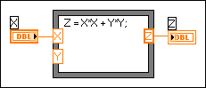

One of the inputs to the Formula Node is not wired. (MathScript RT Module) Unwired inputs on MathScript Nodes also return this error. LabVIEW does not know what value to use for the parameter. For example, in the following block diagram, the Y input parameter is not wired.
You can correct this error in the following ways: